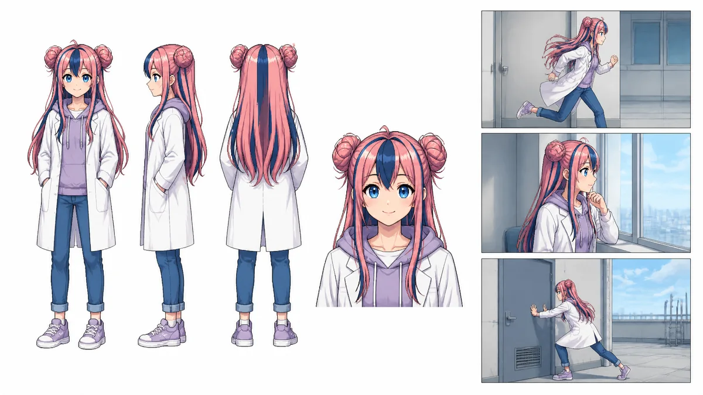
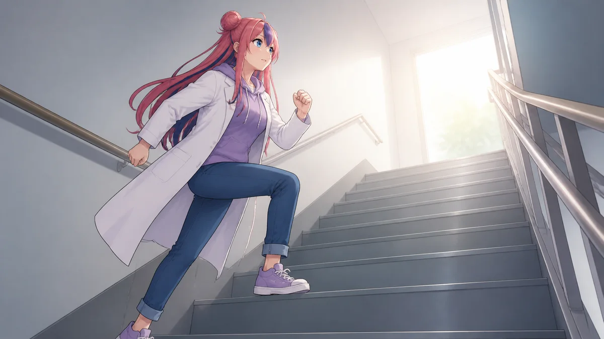

샷 크기 · 앵글 · 인물 · 동작 · 방향 · 감정 · 배경 · 빛 — 콘티의 세 줄과 2~4부의 선택을 조각으로 옮깁니다
방법: 컷 문장 조립일상: 택배 송장
왜 이렇게 하나
무엇이 문제인가 — 콘티의 세 줄(목적·흐름·감정)은 사람이 읽기엔 충분하지만, AI는 카메라·방향·빛까지 정해 주지 않으면 무난한 값을 골라 채웁니다.
그냥 하면 막히는 곳 — '하루가 창밖을 본다' 한 줄이면 AI는 정면 상반신, 한가운데, 미소, 흰 배경을 고르기 쉽습니다. 1~4부에서 정한 것이 모두 사라집니다.
이렇게 푼다 — 컷마다 여덟 조각을 채웁니다. 샷 크기·앵글(2부), 인물과 고정값(5부 2단계), 동작(4부), 화면 기준 방향(3부), 감정(1부), 배경, 빛. 끝에 'no text, adults'를 붙입니다.
쉽게 말하면 — 택배 송장에 받는 사람, 주소, 연락처, 물건 종류를 항목마다 적어야 택배가 길을 잃지 않습니다. 하나라도 빠지면 기사님이 짐작합니다.
일상으로 치면
음식 배달 앱에서 '맵기·양·빼 줄 재료'를 고르는 것처럼, 컷 문장도 정해 둔 조각을 하나씩 고르면 빠뜨리지 않습니다.
그림·영상 현장에서는
AI 그림 작업자들은 컷 문장을 '샷 → 인물 → 동작 → 배경 → 빛 → 화풍 → 금지' 같은 정해진 차례로 씁니다. 차례가 같으면 컷끼리 비교하고 고치기 쉽습니다.
박사5컷 '깨달음'을 문장으로 옮겨 보자.
주판봇'하루가 놀란다'! 짧고 굵게!
초파리 연구원샷도 방향도 빛도 없어. 이걸 눌러 봐 — 조각을 하나씩 채워 봐.
조수 하루얼굴 샷, 눈높이, 오른쪽 위를 올려다보며, 깨닫는 얼굴, 창가 역광… 여덟 조각을 채우니 콘티 그대로의 제가 떠올라요.
실험 5-1컷을 고르고 조각을 채워 보세요 · 점검표와 충돌 경고가 함께 나옵니다
풀이
여덟 조각이 모두 차고 서로 부딪치지 않으면(예: 얼굴 샷인데 발 동작) 컷마다 같은 기준으로 그림이 나옵니다.
빠지기 쉬운 조각은 방향과 빛입니다. 방향이 빠지면 3부의 가상선이 깨지고, 빛이 빠지면 컷마다 그림자가 바뀝니다(6부 f8).
조립한 문장은 7부 '컷 문장 공방'에서 여덟 컷 모두 만들어 볼 수 있습니다.
AI 결과, 그대로 써도 될까?
조각을 다 채웠더니 문장이 너무 길어서 AI가 뒤쪽 조각(빛·배경)을 무시하는 것 같습니다. 어떻게 할까요?
답 보기
중요한 조각을 앞에 둡니다. 이 컷의 목적에 꼭 필요한 조각(5컷이면 얼굴 샷·감정·시선 방향)을 먼저 쓰고, 고정값은 기준 시트 첨부로 줄입니다. 한 문장에 한 가지 정보만 넣으면 덜 무시됩니다.
주의할 점 — 여덟 조각은 이 시리즈가 정한 최소 점검표입니다. 도구마다 잘 듣는 낱말과 차례가 조금씩 다르고, 같은 문장도 결과는 매번 다릅니다.
확인 퀴즈 — 컷 문장에서 3부의 가상선을 지키려고 꼭 넣어야 하는 조각은?
화면 기준 방향을 적어야 컷끼리 방향이 이어집니다.3부 1단계의 AI 결과 상자를 떠올려 보세요.
5부 · 2단계
기준 시트를 붙이면 여덟 장이 한 사람이 된다
캐릭터 기준 시트(전신·얼굴·옷)를 매번 첨부하고, 바뀌면 안 되는 고정값을 같은 문장으로 되풀이합니다
방법: 일관성 기준(앵커)일상: 단골 미용실 사진
왜 이렇게 하나
무엇이 문제인가 — AI는 컷마다 캐릭터를 처음부터 다시 그립니다. 앞 컷의 하루를 기억하지 않습니다.
그냥 하면 막히는 곳 — 고정값을 컷마다 다르게 적거나 빠뜨리면 머리 장식·옷·눈 색이 조금씩 바뀌고, 여덟 장째에는 다른 사람이 됩니다.
이렇게 푼다 — 정면·옆·뒤 전신과 얼굴, 옷 세부를 모은 기준 시트를 매번 첨부하고, 고정값 문장(하루: 정수리 번 2개, 앞머리 가운데 남색 줄)을 모든 컷에 똑같이 붙여 넣습니다. 같은 대화에서 이어 만들면 더 잘 지켜집니다.
쉽게 말하면 — 단골 미용실에 '지난번처럼'이라고만 하면 매번 조금씩 달라집니다. 지난번 사진을 보여 주면 거의 같게 나옵니다.
수식이 어려운 조수가 대신 묻습니다
조수 한 장에서 90%쯤 맞으면 충분하지 않아요?
말로 하면 — 한 장이 맞을 확률이 높아도, 여덟 장이 '모두' 맞을 확률은 그 확률을 여덟 번 곱한 값이라 훨씬 낮아집니다.
숫자로 한 번 해 보기
한 장 맞을 확률 0.9 → 여덟 장 모두 0.9의 8제곱 ≈ 0.43
기준 시트와 고정값으로 0.97 → 0.97의 8제곱 ≈ 0.78
0.99면 0.99의 8제곱 ≈ 0.92
학교 수학으로 보면 — 거듭제곱 — 같은 수를 여러 번 곱합니다. 1보다 작은 수는 곱할수록 작아집니다.
여덟 장 모두 맞을 확률 = (한 장 맞을 확률)⁸
식 조각
뜻
한 장 맞을 확률
한 컷에서 고정값이 다 지켜질 확률(예시값)
⁸
여덟 컷이라 여덟 번 곱한다
0.43
열 번 중 네 번쯤만 여덟 장이 다 맞는다
조수 90%짜리가 여덟 번이면 43%! 한 장 한 장 아주 조금씩 올리는 게 크게 남는군요.
박사여기서 한 번 멈춰도 괜찮아요. 식이 낯설면 건너뛰고 아래 실험부터 눌러 보세요. 숫자는 실험이 대신 계산해 줍니다.
일상으로 치면
여덟 명이 줄줄이 전달하는 말 전하기 놀이에서, 한 사람이 조금만 틀려도 끝사람에게는 전혀 다른 말이 됩니다.
그림·영상 현장에서는
캐릭터 디자인 작업에서는 정면·옆·뒤 전신, 표정, 머리 각도, 손, 옷, 소품, 색상표를 한 장에 모은 '일관성 기준 시트'를 만들어 모든 그림의 기준으로 씁니다. 이 시리즈의 참고 그림(설정 시트·애니풍 기준 전신)이 그 역할입니다.
박사여덟 컷 모두 하루가 하루로 나오려면?
주판봇'하루'라고 이름만 쓰면 AI가 알아서요!
초파리 연구원AI는 우리 하루를 몰라. 이걸 눌러 봐 — 기준을 하나씩 켜고, 여덟 장 모두 맞을 확률을 봐.
조수 하루시트 첨부와 고정값 문장을 켜니 여덟 장 모두 맞을 확률이 0.78까지 올라요. 이름만 쓸 땐 0.17이었어요!
실험 5-2기준을 켜고 꺼 보세요 · 아래 여덟 얼굴은 컷마다 고정값이 지켜졌는지(예시 확률로 뽑음)
풀이
기준 시트와 고정값 문장을 함께 쓰면 한 장이 맞을 확률이 오르고, 여덟 장이 모두 맞을 확률은 그보다 훨씬 크게 오릅니다.
그래도 100%는 아닙니다. 받은 여덟 장을 기준 시트와 나란히 놓고 고정값(번 2개, 남색 줄, 옷 색)을 한 장씩 확인합니다.
틀린 컷은 전체를 다시 만들지 말고 틀린 곳만 부분 수정(영역 칠하기)으로 고칩니다. 맞은 일곱 장을 지킬 수 있습니다.

왼쪽에 하루 기준 시트(정면·옆·뒤 전신과 얼굴), 오른쪽에 같은 하루의 세 컷(오른쪽으로 달리기, 창밖 보기, 옥상 문 밀기) — 번 두 개와 남색 줄, 옷이 모두 같음
AI 결과, 그대로 써도 될까?
여덟 장 중 6컷의 하루만 앞머리 남색 줄이 사라졌습니다. 여덟 장을 다시 만들어야 할까요?
답 보기
다시 만들 필요 없습니다. 6컷만 앞머리 부분을 칠하고 'a thick navy streak down the center of the bangs'로 부분 수정합니다. 다시 만들면 맞았던 다른 컷이 틀어질 수 있습니다.
주의할 점 — 확률 값(0.9·0.97 등)은 원리를 보이기 위한 예시값입니다. 실제 확률은 도구·캐릭터·그림체에 따라 크게 다르고, 컷끼리 서로 독립이라는 가정도 단순화입니다.
확인 퀴즈 — 한 장 맞을 확률이 0.9일 때 두 장이 모두 맞을 확률은?
0.9 × 0.9 = 0.81입니다.확률을 두 번 곱해 보세요.
5부 · 3단계
밑그림을 붙이고 강도를 고르면 구도가 남는다
콘티 썸네일·러프를 첨부해 구도를 주고, 다시 그리는 강도를 0.35~0.6 사이에서 고릅니다
방법: 밑그림으로 구도 주기일상: 색칠 공부
왜 이렇게 하나
무엇이 문제인가 — 문장만으로는 인물의 자리·크기·자세를 정확히 지정하기 어렵습니다. 1~4부에서 정한 구도가 흔들립니다.
그냥 하면 막히는 곳 — 밑그림을 첨부해도 강도가 너무 세면 구도까지 새로 그리고, 너무 약하면 거친 연필선이 그대로 남습니다.
이렇게 푼다 — 글자·화살표를 지운 콘티 밑그림을 첨부하고, '밑그림을 얼마나 다시 그릴지(강도)'를 고릅니다. 강도가 낮으면 구도가 많이 남고, 높으면 그림이 많이 바뀝니다. 콘티의 구도를 지키며 완성하려면 0.35~0.6이 출발점입니다.
쉽게 말하면 — 색칠 공부 책은 선이 정해져 있어 누가 칠해도 그림의 자리는 같습니다. 선을 지우고 마음대로 그리면 다른 그림이 됩니다.
수식이 어려운 조수가 대신 묻습니다
조수 강도 0.4는 무슨 뜻이에요? 40%만 바뀐다는 건가요?
말로 하면 — 그림 생성 AI는 그림을 여러 단계에 걸쳐 조금씩 다듬어 만듭니다. 강도 0.4는 전체 단계 중 뒤쪽 40%만 다시 거친다는 뜻이라, 앞쪽에서 정해지는 큰 구도는 밑그림 것이 남습니다.
숫자로 한 번 해 보기
전체 30단계, 강도 0.4 → 30 × 0.4 = 12단계만 다시 그림
강도 0.8 → 24단계 다시 그림, 구도부터 바뀌기 쉬움
강도 0.2 → 6단계만, 연필 선이 거의 그대로
학교 수학으로 보면 — 곱셈과 비율 — 전체의 0.4배입니다.
다시 그리는 단계 수 = 전체 단계 수 × 강도
식 조각
뜻
전체 단계 수
그림을 다듬는 횟수(도구마다 다름, 예시 30)
강도
0~1. 클수록 밑그림에서 멀어진다
앞쪽 단계
큰 구도가 정해지는 단계
뒤쪽 단계
세부·질감이 정해지는 단계
조수 0.4면 12단계만! 앞쪽 18단계 몫인 구도는 콘티 그대로 남는 거네요.
박사여기서 한 번 멈춰도 괜찮아요. 식이 낯설면 건너뛰고 아래 실험부터 눌러 보세요. 숫자는 실험이 대신 계산해 줍니다.
일상으로 치면
사진 앱의 '필터 강도' 막대와 비슷합니다. 낮으면 원래 사진이 많이 남고, 높으면 필터 그림체가 덮습니다.
그림·영상 현장에서는
그림 생성 도구에서는 이 값을 'image strength', 'denoising strength', '참고 이미지 영향도' 같은 이름으로 부릅니다. 숫자의 방향이 반대인 도구(높을수록 밑그림을 따름)도 있으니 이름과 설명을 먼저 확인합니다. 강도를 고르는 막대가 없는 도구라면 밑그림을 첨부하고 'use the attached sketch only for composition and pose'처럼 문장으로 정도를 적습니다.
박사7컷 썸네일을 붙여 완성 컷을 만든다. 강도는?
주판봇1.0! 가장 세게 해야 가장 멋있죠!
초파리 연구원1.0이면 썸네일을 무시하고 새로 그려. 이걸 눌러 봐 — 강도를 0.2에서 0.9까지.
모아0.45쯤에서 문과 하루의 자리는 그대로, 연필선은 깨끗한 그림이 됐어요. 0.8을 넘기니 하루가 화면 가운데로 옮겨 갔고요.
실험 5-3강도를 바꿔 보세요 · 왼쪽 밑그림, 오른쪽 결과(단순화한 흉내)
풀이
강도가 낮을수록 구도·자세가 밑그림 그대로 남고, 높을수록 세부가 좋아지는 대신 구도가 흔들립니다.
Illustration, wide 16:9.
Art style: high-quality anime illustration, clean confident lineart, two-tone cel shading, natural adult proportions (about 7.5 heads tall).
Match the attached reference images exactly (face, hair, colors, accessories). All characters are adults in their twenties (the Professor is an adult man in his thirties); modest outfits exactly as described.
Two panels side by side with exactly the same composition. Left panel: a rough graphite pencil thumbnail on white paper — a mannequin with a circle head and cross line, body leaning forward in a C-shaped curve, both hands on a door on the right side. Right panel: the same composition finished as a full-color waist-up shot of Haru (adult lab assistant, long straight pink hair with navy streaks and a thick navy streak down the center of the bangs, two round hair buns on top, small ahoge, big blue eyes), wearing lavender hoodie with white drawstrings over a white t-shirt, open white knee-length lab coat pushing a heavy metal rooftop door with determination, a line of bright daylight coming through the opening door.
Figure position, size and pose must match between the two panels.
No text, no letters, no numbers, no logos, no watermark, no revealing clothing, not childlike, no school uniform, not resembling any famous anime character.
A 결과 — Genspark로 만든 그림
B — 원리 빼기: 구도를 무시한 완성
Same image. Change only: in the right panel, ignore the sketch composition — put Haru in the center of the frame facing the viewer, smiling, with the door behind her. Still no text.
Illustration, wide 16:9.
Art style: high-quality anime illustration, clean confident lineart, two-tone cel shading, natural adult proportions (about 7.5 heads tall).
Match the attached reference images exactly (face, hair, colors, accessories). All characters are adults in their twenties (the Professor is an adult man in his thirties); modest outfits exactly as described.
Left half: a clean character reference sheet of Haru (adult lab assistant, long straight pink hair with navy streaks and a thick navy streak down the center of the bangs, two round hair buns on top, small ahoge, big blue eyes), wearing lavender hoodie with white drawstrings over a white t-shirt, open white knee-length lab coat — front, side and back full-body views standing in a row and one close-up of the face, on white. Right half: three small story panels of the same Haru with identical hair buns, navy bang streak and outfit: running toward the right in a hallway; waist-up looking out a window to the right; pushing a heavy rooftop door with her whole body.
Every depiction of Haru must keep exactly the same design.
No text, no letters, no numbers, no logos, no watermark, no revealing clothing, not childlike, no school uniform, not resembling any famous anime character.
A 결과 — Genspark로 만든 그림
B — 원리 빼기: 이름만으로 따로 만들기
In three NEW conversations with NO reference images attached, make one panel each using only the name 'Haru, a lab assistant with pink hair': running toward the right / looking out a window / pushing a door. Then place the three results side by side.
실제 결과: A는 세 컷 모두 번 두 개·가운데 남색 줄·라벤더 후드가 지켜졌습니다. B(기준 없이 이름만)는 분홍 포니테일에 회색 옷을 입은 다른 사람이 나왔고, 첫 컷은 왼쪽으로 달렸습니다. 기준 시트가 왜 필요한지 가장 잘 보여 주는 결과입니다.
B는 일부러 기준 없이 따로 만든 세 장입니다. 한 번의 요청에 여러 변화를 넣지 않습니다.
5부 · 연습 과제
프롬프트 연습 과제
이 부의 원리를 내 손으로 프롬프트에 옮겨 보는 과제 두 개입니다. 과제마다 목표 → 순서 → 넣을 프롬프트 → 확인할 것 → 예상 결과 → 자주 생기는 문제 순서로 적었습니다. 예상 결과 그림은 아래 프롬프트로 실제로 만든 그림입니다. 요청과 다르게 나온 곳은 '실제 결과'에 그대로 적었습니다. 결과는 매번 조금씩 다르니, 그림이 똑같지 않아도 '확인할 것'이 맞으면 성공입니다.
연습 1 · 여덟 조각으로 기준 컷 만들기
목표5컷을 여덟 조각(샷·앵글·인물·동작·방향·감정·배경·빛)의 문장으로 만들어 기준 컷으로 확정합니다.
왜 이 연습인가기준 컷은 나머지 일곱 컷의 바탕입니다(5부 4단계). 여덟 조각을 모두 채워 두면, 기준 컷을 고칠 때 어느 조각을 바꿀지 바로 보입니다.
첨부할 참고 그림: refs/haru_anime_base.png, refs/haru_sheet.png — 참고 그림은 위 직접 만들어 보기에서 내려받을 수 있습니다.
순서
새 대화를 열고 하루 참고 그림 두 장을 첨부합니다.
아래 프롬프트를 붙여 넣습니다. 줄마다 한 조각입니다.
받은 그림을 기준 시트와 나란히 놓고 고정값(번 2개, 가운데 남색 줄, 라벤더 후드, 흰 랩코트)을 하나씩 확인합니다.
틀린 곳은 그 부분만 부분 수정으로 고칩니다. 다 맞으면 이 그림을 '기준 컷'으로 저장합니다.
이 대화를 닫지 말고 다음 과제(d2)에 그대로 씁니다.
넣을 프롬프트와 예상 결과
넣을 프롬프트(여덟 조각)
Illustration, wide 16:9.
Art style: high-quality anime illustration, clean confident lineart, two-tone cel shading, natural adult proportions (about 7.5 heads tall).
Match the attached reference images exactly (face, hair, colors, accessories). All characters are adults in their twenties (the Professor is an adult man in his thirties); modest outfits exactly as described.
Shot: close-up. Angle: eye level. Character: Haru (adult lab assistant, long straight pink hair with navy streaks and a thick navy streak down the center of the bangs, two round hair buns on top, small ahoge, big blue eyes), wearing lavender hoodie with white drawstrings over a white t-shirt, open white knee-length lab coat. Action: lifting her head. Direction: looking toward the UPPER RIGHT of the frame. Emotion: startled realization, eyes wide, eyebrows raised. Background: bright corridor next to a large window on the right. Light: soft backlight from the window, afternoon.
No text, no letters, no numbers, no logos, no watermark, no revealing clothing, not childlike, no school uniform, not resembling any famous anime character.
여덟 조각 문장으로 만든 5컷 기준 컷 — 창가에서 오른쪽 위를 올려다보며 놀란 하루의 얼굴 샷
예상 결과 — 얼굴이 화면을 채우는 하루가 오른쪽 위 창 쪽을 올려다보며 놀란 얼굴을 하고, 창에서 들어온 빛이 머리 가장자리를 밝힙니다. 이 그림이 나머지 컷의 기준이 됩니다.
실제 결과: 얼굴 샷·눈높이·오른쪽 위 시선·놀람·창가 역광이 모두 보이고, 번 두 개와 가운데 남색 줄도 지켜졌습니다. 기준 컷으로 썼습니다.
자주 생기는 문제와 대처
문제
이렇게 고칩니다
뒤쪽 조각(배경·빛)이 무시된다
중요한 조각을 앞에 둡니다. 이 컷의 목적에 필요한 샷·감정·방향을 먼저, 배경·빛을 뒤에 둡니다.
앞머리 남색 줄이 옆으로 간다
그 부분만 칠해 'thick navy streak down the CENTER of the bangs'로 부분 수정합니다.
얼굴 샷인데 손이 들어와 가린다
'hands out of frame'을 덧붙입니다.
더 해 보기같은 여덟 조각에서 '앵글'만 'slight low angle'로 바꿔 만들어, 감정의 세기가 달라지는지 비교해 보세요.
연습 2 · 기준 컷에 이어 6컷 만들기
목표d1의 기준 컷을 만든 대화에서 6컷(계단을 오르는 앙각 전신)을 이어 만들어, 캐릭터가 유지되는지 확인합니다.
왜 이 연습인가같은 대화에서 이어 만들면 캐릭터는 잘 지켜지지만, 앞 그림의 구도를 지나치게 따라 하기 쉽습니다(5부 4단계). 'New composition'으로 구도가 바뀐다는 것을 먼저 알립니다.
첨부할 참고 그림: d1에서 만든 기준 컷이 있는 대화 그대로(참고 그림 두 장 포함) — 참고 그림은 위 직접 만들어 보기에서 내려받을 수 있습니다.
순서
d1의 대화를 그대로 엽니다.
아래 프롬프트를 이어 붙입니다.
받은 6컷과 기준 컷을 나란히 놓고 고정값이 같은지 봅니다.
6컷이 기준 컷과 같은 얼굴 샷으로 나오면, 새 대화를 열어 기준 컷과 기준 시트만 첨부하고 같은 프롬프트로 다시 만듭니다.
고정값이 하나라도 틀리면 그 부분만 부분 수정합니다.
넣을 프롬프트와 예상 결과
같은 대화에 이어서 — 6컷
New composition, the next cut — do not reuse the previous framing. Shot: full body. Angle: low angle from the bottom of the stairs looking up. Character: the same Haru, exactly the same design as the key cut. Action: climbing the stairs quickly. Direction: moving toward the upper right of the frame. Emotion: determined. Background: a bright stairwell. Light: daylight from a window at the top of the stairs. Still no text, adult proportions.

기준 컷에 이어 만든 6컷 — 밝은 계단을 오른쪽 위로 오르는 하루의 전신, 살짝 올려다본 각도